1. What's in the Box
Make sure everything is included. Anything missing?
Please contact support@eufy.com
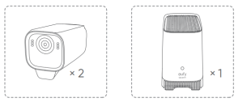
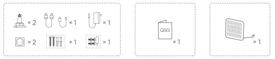
Items | 2-Cam Kit | 3-Cam Kit | 4-Cam Kit |
Camera | 2 | 3 | 4 |
Backup Solar Panel(s) | 1 | 1 | 2 |
Mounting Brackets | 3 | 4 | 6 |
Positioning Stickers | 3 | 4 | 6 |
Screw Packs | 3 | 4 | 6 |
Hard Drive Screws & Reset Needle | 1 | 1 | 1 |
2. At a Glance
2.1 eufyCam S3 Pro (T8612)
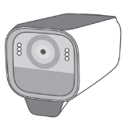
| ① Spotlight ② Camera Lens ③ LED Indicator ④ Photosensitive Sensor ⑤ Motion Sensor ⑥ Built-in Solar Panel ⑦ Speaker ⑧ SYNC Button ⑨ Mounting Hole ⑩ USB-C Charging Port |
2.1 HomeBase S380 (T8030)
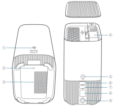 | ① Status LED ② Reset Hole ③ Speaker ④ Hard Drive Bracket ⑤ SYNC / ALARM OFF Button ⑥ USB Port 1 (Output Power: 5V/2.4A; for Charing eufyCam) ⑦ USB Port 2 (for Data) ⑧ Ethernet Port ⑨ DC Power Port |
3. How the System Works
The built-in solar panel and battery, along with the backup solar panel, keep cameras running year-round. Store recordings on HomeBase and an external hard drive (not included) for local security.
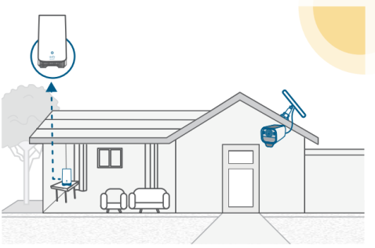
4. Getting Started with the App
1. Download and install the eufy Security app, then log in or create an account.
- Turn on the HomeBase and connect it to your router. Wait about 1 minute for the LED to turn blue. Follow in-app instructions to add the HomeBase.
Use the included Ethernet cable to connect to your home Wi-Fi router.
Use the included power adapter (12V/2A) to power on the HomeBase.
To improve the wireless range of HomeBase, place it on a table or shelf 3-5 feet (1-1.5 m) high and as far away from the wall as possible. |
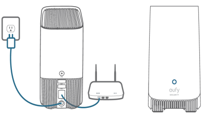 | 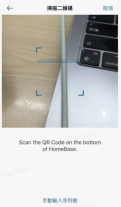 |
- Follow in-app instructions to add eufyCam S3 Pro and then sync them with HomeBase S380.
Up to 16 eufyCams can be synchronized with HomeBase. Keep the maximum distance of 1 meter between HomeBase and eufyCam when synchronizing. Upgrade the firmware if new firmware is detected and the popup prompts you to do so. |
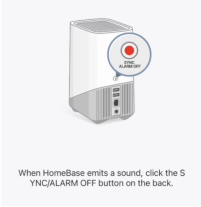 | 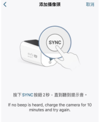 |
- Complete other settings or skip for later setup.
Face Management
AI Empowerment
Video/Audio Settings
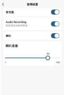 |
|

5. Preparing
5.1 Expand HomeBase Storage (Optional)
HomeBase S380 comes with 16 GB of storage for saving video recordings and allows you to add an additional hard drive to expand the space. Your hard drive must meet the following requirements:
Type | Hard disk drive (HDD) or solid state drive (SSD) that uses the SATA interface |
Size | 2.5 inch |
Capacity | Unlimited |
Recommended | Western Digital, Seagate, SAMSUNG, Kingston, PNY, Crucial, SanDisk |
The HomeBase must be powered off when you install or remove a hard drive. Transfer all the data in your hard drive to a secure location before adding it to the HomeBase. A new hard drive must be initialized through the eufy Security app to work with the HomeBase. |
- Push down the top lid to remove it.
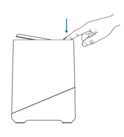
- Loosen the screw, then take out the hard drive bracket.
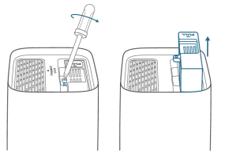
- Fix your hard drive to the bracket with the provided screws.
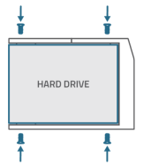
- Insert and screw the bracket back to S380 HomeBase, then put the top lid back into place.
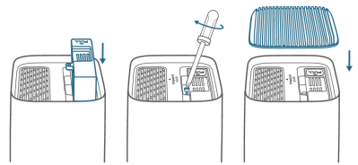
5.2 Fully Charge the Cameras before Mounting
Fully charge the cameras (to 100% battery level) before installing them outdoors.
LED Indicator | Description |
Blue | In Charging |
Off | Fully Charged |
6. Mounting
6.1 Choose a Location
Choose a location where you can get the desired view. We recommend hanging the camera 7-10 ft (2-3 m) above the ground.
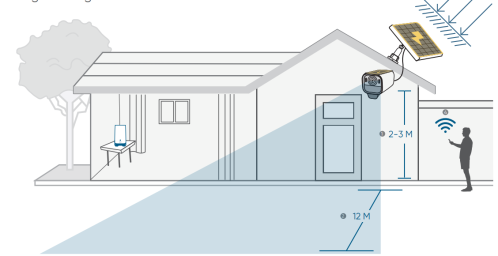
6.2 Positon and Drill Holes
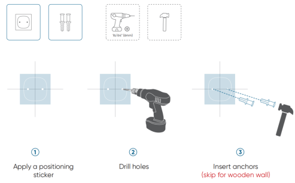
6.3 Install the Mounting Bracket
6.4 Mount the Camera
Your eufyCam S3 Pro includes a solar panel that converts sunlight into electrical energy and keeps the built-in battery charged every day.
The charging efficiency fluctuates according to the intensity of the sunlight.
Don't worry when the battery level goes down. It happens when there isn't enough sunlight or the camera is consuming more power than usual. You don't need to charge the camera with a cable until a low battery alarm goes off.
Make sure the USB-C charging port is securely protected by the waterproof cover. |
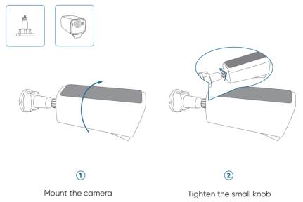
6.5 Adjust the Camera Field of View
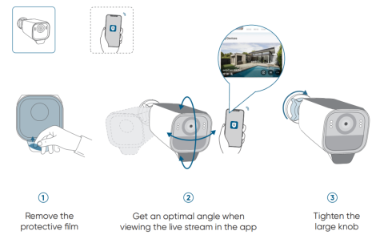
6.6 Mount the Backup Solar Panel
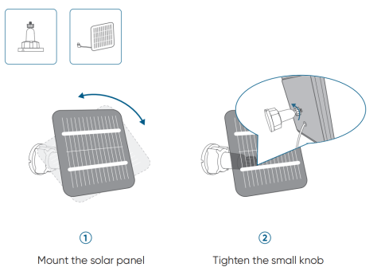